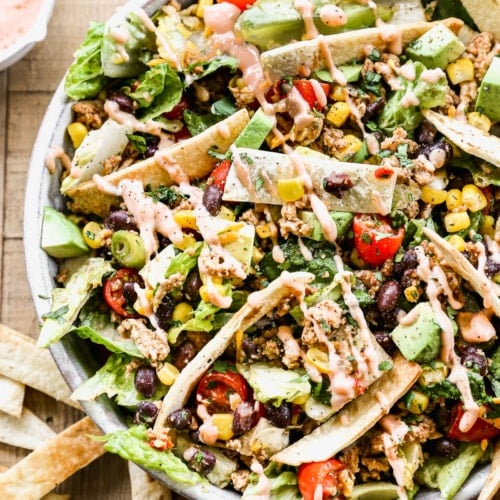

A healthy taco salad is a delicious and nutritious variation of the traditional taco, made with fresh and wholesome ingredients. The salad typically includes a base of chopped romaine lettuce, which is then topped with a variety of colorful vegetables such as cherry tomatoes, black beans, corn, and diced avocado. The salad is then dressed with a tangy dressing made from lime juice, Greek yogurt or sour cream, salsa, and seasonings such as salt and pepper. Ground turkey or beef seasoned with taco seasoning is often used as the protein source in this recipe, but can be substituted with vegan or vegetarian options such as tofu, tempeh or lentils.